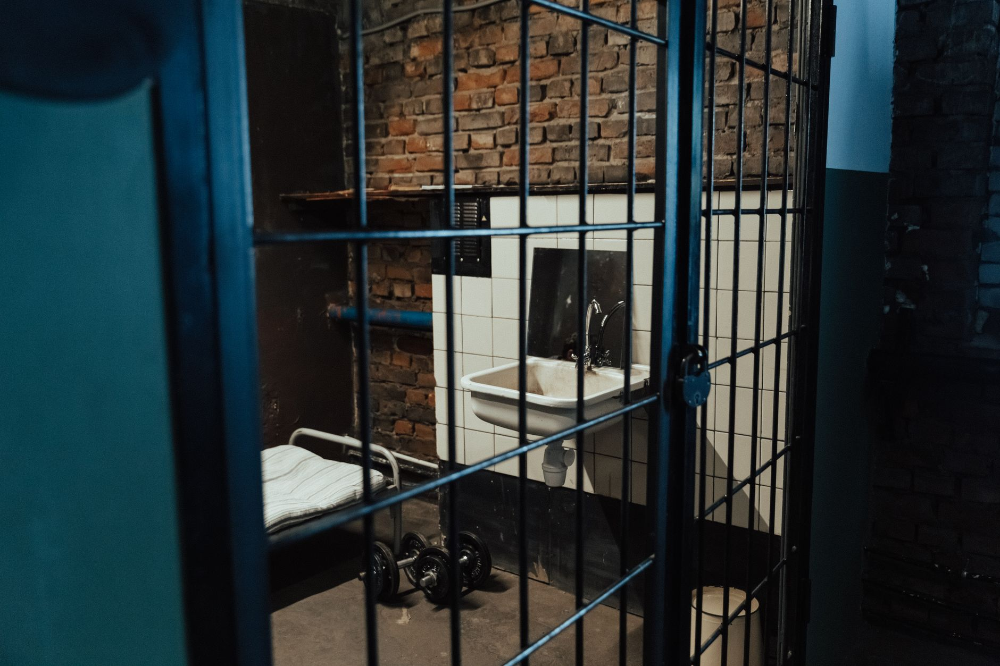

The rise of prison overcrowding in the UK
The United Kingdom is currently grappling with a significant surge in inmate numbers, pushing the existing prison infrastructure to its absolute breaking point. For years, experts have warned that the capacity of the nation's correctional facilities was not keeping pace with sentencing trends and changing legal landscapes. This imbalance has created a high-pressure environment for both staff and inmates, leading to safety concerns and logistical nightmares within the walls of many high-security and category B prisons.
As the population grows, the traditional methods of managing prisoner numbers are proving insufficient. The Ministry of Justice is facing mounting pressure to find immediate solutions to prevent the total collapse of prison services. The lack of available beds means that many facilities are operating well beyond their intended design capacity, which impacts everything from rehabilitation programs to basic hygiene and mental health support for those in custody.
Repurposing utility spaces for housing
In a move that highlights the severity of the situation, prison authorities have begun looking at non-traditional spaces to accommodate the overflow. One of the most striking developments involves the conversion of utility areas, such as laundry rooms, into makeshift sleeping quarters. While these spaces were originally designed for industrial washing and drying equipment, they are being modified to serve as functional, albeit cramped, cells for new arrivals.
This conversion process involves significant structural changes to ensure that these repurposed areas meet basic safety and security standards. While much faster than building new wings or entire facilities, the reliance on laundry rooms is seen by many as a temporary bandage on a much deeper wound. The logistical challenge of moving laundry operations elsewhere while simultaneously setting up living quarters is a complex task for prison management.
The necessity of turning utility rooms into living spaces is a clear indicator that the current correctional system is operating in a state of permanent emergency.
Impact on prison staff and inmate welfare
The shift toward utilizing every available inch of space has profound implications for the people living and working within these institutions. For staff, the increased density of inmates makes maintaining order and security significantly more difficult. Managing a larger, more crowded population requires more personnel, yet the staffing crisis in the prison service often means that there are fewer officers available to monitor these new, unconventional cell areas.
For the inmates, the consequences are equally concerning. Living in repurposed spaces that were never intended for human habitation can lead to increased stress, tension, and conflict. The loss of communal space and the reduction in privacy can exacerbate existing mental health issues, creating a cycle of instability that is difficult to break.
Long term solutions and policy debates
Policymakers are currently debating whether the solution lies in building more prisons, changing sentencing guidelines, or investing more heavily in community-based rehabilitation. Critics argue that building new prisons is a slow and expensive process that does not address the root causes of crime. On the other hand, proponents of reform suggest that reducing the reliance on short-term custodial sentences could alleviate the pressure on the system almost immediately.
The debate is multifaceted, involving legal experts, human rights advocates, and government officials. There is a growing consensus that a multi-pronged approach is necessary. This includes not only increasing physical capacity but also improving the efficiency of the judicial process and ensuring that prison time is used effectively for reintegration into society, rather than just warehousing individuals.
A world facing unexpected crises
The struggle to manage infrastructure under pressure is not unique to the UK's justice system. Around the world, societies are finding themselves unprepared for sudden shifts in demand, whether those shifts are driven by social changes or environmental catastrophes. When systems fail to adapt to rapid changes, the consequences can be devastating for the communities involved.
Just as the prison system struggles to adapt to population growth, many regions are struggling to cope with the sudden onset of natural disasters. For instance, our previous report on how Devastating Floods Turn Lush Villages Into Barren Land highlights how quickly environmental shifts can overwhelm existing infrastructure and displace entire populations. Both crises underscore the importance of resilient planning and proactive management.
Whether it is the management of human populations in correctional facilities or the management of land after a natural disaster, the ability to respond to unforeseen challenges remains one of the greatest tests for modern governance and social organization.
See Also
If you enjoyed this Current Events article, check out Devastating Floods Turn Lush Villages Into Barren Land for more useful reading.